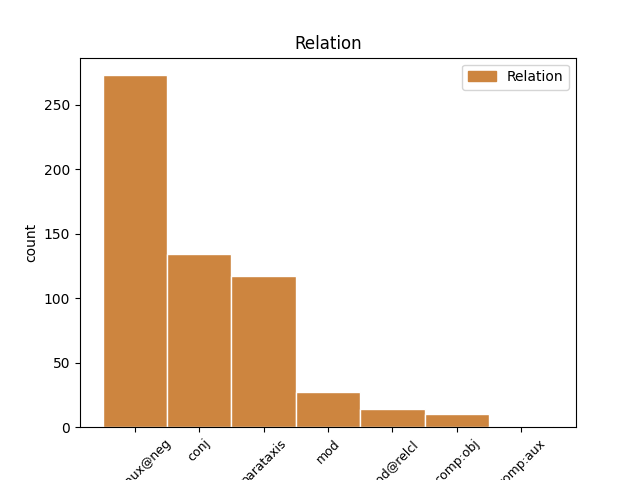
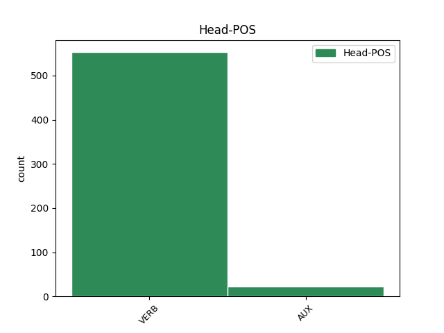
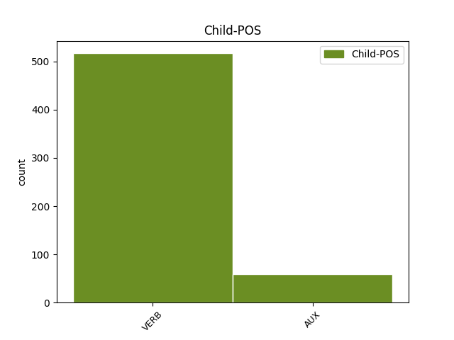

Distribution of features within this leaf



Agreement Rules sorted by frequency.
- When the dependent token is the complement for auxiliary(comp:aux@neg) of the head token, and the head token is VERB
1 Oahpaheaddji _ _ _ _ 0 _ _ _
2 šattai _ _ _ _ 0 _ _ _
3 geavahit _ _ _ _ 0 _ _ _
4 buot _ _ _ _ 0 _ _ _
5 čehppodagas _ _ _ _ 0 _ _ _
6 , _ _ _ _ 0 _ _ _
7 amas _ _ _ _ 0 _ _ _
8 massit _ _ _ _ 0 _ _ _
9 vátna _ _ _ _ 0 _ _ _
10 oahppiidis _ _ _ _ 0 _ _ _
11 , _ _ _ _ 0 _ _ _
12 lohku _ _ _ _ 0 _ _ _
13 ii ii VERB V Mood=Ind|Number=Sing|Person=3|Polarity=Neg|VerbForm=Fin 0 _ _ _
14 ožžon oažžut VERB V Connegative=Yes|Mood=Ind|Tense=Past|VerbForm=Fin 13 comp:aux@neg _ _
15 heađisge _ _ _ _ 0 _ _ _
16 njiedjat _ _ _ _ 0 _ _ _
17 vuollel _ _ _ _ 0 _ _ _
18 viđa _ _ _ _ 0 _ _ _
19 , _ _ _ _ 0 _ _ _
20 dasgo _ _ _ _ 0 _ _ _
21 dalle _ _ _ _ 0 _ _ _
22 gielddas _ _ _ _ 0 _ _ _
23 dahje _ _ _ _ 0 _ _ _
24 Skuvlaráđđehusas _ _ _ _ 0 _ _ _
25 lei _ _ _ _ 0 _ _ _
26 vuoigatvuohta _ _ _ _ 0 _ _ _
27 loahpahit _ _ _ _ 0 _ _ _
28 diekkár _ _ _ _ 0 _ _ _
29 gánnetmeahttun _ _ _ _ 0 _ _ _
30 fálaldaga _ _ _ _ 0 _ _ _
31 . _ _ _ _ 0 _ _ _
1 Gárvodeahkku gárvodit VERB V Mood=Imp|Number=Dual|Person=1|VerbForm=Fin 0 _ _ _
2 ja _ _ _ _ 0 _ _ _
3 mannu mannat VERB V Mood=Imp|Number=Dual|Person=1|VerbForm=Fin 1 conj _ _
4 geahččat _ _ _ _ 0 _ _ _
5 dien _ _ _ _ 0 _ _ _
6 nieidda _ _ _ _ 0 _ _ _
7 , _ _ _ _ 0 _ _ _
8 gii _ _ _ _ 0 _ _ _
9 váccii _ _ _ _ 0 _ _ _
10 stuora _ _ _ _ 0 _ _ _
11 gápmagiiguin _ _ _ _ 0 _ _ _
12 . _ _ _ _ 0 _ _ _
1 Oahpaheaddji _ _ _ _ 0 _ _ _
2 šattai šaddat VERB V Mood=Ind|Number=Sing|Person=3|Tense=Past|VerbForm=Fin 0 _ _ _
3 geavahit _ _ _ _ 0 _ _ _
4 buot _ _ _ _ 0 _ _ _
5 čehppodagas _ _ _ _ 0 _ _ _
6 , _ _ _ _ 0 _ _ _
7 amas _ _ _ _ 0 _ _ _
8 massit _ _ _ _ 0 _ _ _
9 vátna _ _ _ _ 0 _ _ _
10 oahppiidis _ _ _ _ 0 _ _ _
11 , _ _ _ _ 0 _ _ _
12 lohku _ _ _ _ 0 _ _ _
13 ii ii VERB V Mood=Ind|Number=Sing|Person=3|Polarity=Neg|VerbForm=Fin 2 parataxis _ _
14 ožžon _ _ _ _ 0 _ _ _
15 heađisge _ _ _ _ 0 _ _ _
16 njiedjat _ _ _ _ 0 _ _ _
17 vuollel _ _ _ _ 0 _ _ _
18 viđa _ _ _ _ 0 _ _ _
19 , _ _ _ _ 0 _ _ _
20 dasgo _ _ _ _ 0 _ _ _
21 dalle _ _ _ _ 0 _ _ _
22 gielddas _ _ _ _ 0 _ _ _
23 dahje _ _ _ _ 0 _ _ _
24 Skuvlaráđđehusas _ _ _ _ 0 _ _ _
25 lei _ _ _ _ 0 _ _ _
26 vuoigatvuohta _ _ _ _ 0 _ _ _
27 loahpahit _ _ _ _ 0 _ _ _
28 diekkár _ _ _ _ 0 _ _ _
29 gánnetmeahttun _ _ _ _ 0 _ _ _
30 fálaldaga _ _ _ _ 0 _ _ _
31 . _ _ _ _ 0 _ _ _
1 Gállá _ _ _ _ 0 _ _ _
2 ii _ _ _ _ 0 _ _ _
3 báhcán báhcit VERB V Connegative=Yes|Mood=Ind|Tense=Past|VerbForm=Fin 0 _ _ _
4 vuordit _ _ _ _ 0 _ _ _
5 , _ _ _ _ 0 _ _ _
6 son _ _ _ _ 0 _ _ _
7 siktii siktet VERB V Mood=Ind|Number=Sing|Person=3|Tense=Past|VerbForm=Fin 3 mod _ _
8 ja _ _ _ _ 0 _ _ _
9 nu _ _ _ _ 0 _ _ _
10 soai _ _ _ _ 0 _ _ _
11 bážiiga _ _ _ _ 0 _ _ _
12 oktanaga _ _ _ _ 0 _ _ _
13 , _ _ _ _ 0 _ _ _
14 muhto _ _ _ _ 0 _ _ _
15 eaba _ _ _ _ 0 _ _ _
16 deaivan _ _ _ _ 0 _ _ _
17 Stuorra _ _ _ _ 0 _ _ _
18 Sarvai _ _ _ _ 0 _ _ _
19 , _ _ _ _ 0 _ _ _
20 muhto _ _ _ _ 0 _ _ _
21 goappašat _ _ _ _ 0 _ _ _
22 deive _ _ _ _ 0 _ _ _
23 Almmi _ _ _ _ 0 _ _ _
24 Návlái _ _ _ _ 0 _ _ _
25 . _ _ _ _ 0 _ _ _
1 Jouni _ _ _ _ 0 _ _ _
2 lea leat AUX V Mood=Ind|Number=Sing|Person=3|Tense=Pres|VerbForm=Fin 0 _ _ _
3 hárjánan _ _ _ _ 0 _ _ _
4 bivdi _ _ _ _ 0 _ _ _
5 ja _ _ _ _ 0 _ _ _
6 lohká lohkat VERB V Mood=Ind|Number=Sing|Person=3|Tense=Pres|VerbForm=Fin 2 conj _ _
7 iežas _ _ _ _ 0 _ _ _
8 hirbmadit _ _ _ _ 0 _ _ _
9 illudan _ _ _ _ 0 _ _ _
10 go _ _ _ _ 0 _ _ _
11 vuittii _ _ _ _ 0 _ _ _
12 váldovuoittu _ _ _ _ 0 _ _ _
13 . _ _ _ _ 0 _ _ _
1 Eamit _ _ _ _ 0 _ _ _
2 fas _ _ _ _ 0 _ _ _
3 imáštallá imaštallat VERB V Mood=Ind|Number=Sing|Person=3|Tense=Pres|VerbForm=Fin 0 _ _ _
4 , _ _ _ _ 0 _ _ _
5 gosa _ _ _ _ 0 _ _ _
6 son _ _ _ _ 0 _ _ _
7 dálges _ _ _ _ 0 _ _ _
8 lea leat VERB V Mood=Ind|Number=Sing|Person=3|Tense=Pres|VerbForm=Fin 3 mod@relcl _ _
9 ráhkkaneamen _ _ _ _ 0 _ _ _
10 . _ _ _ _ 0 _ _ _
1 Lea leat AUX V Mood=Ind|Number=Sing|Person=3|Tense=Pres|VerbForm=Fin 0 _ _ _
2 eahpečielggas _ _ _ _ 0 _ _ _
3 lea leat VERB V Mood=Ind|Number=Sing|Person=3|Tense=Pres|VerbForm=Fin 1 parataxis _ _
4 go _ _ _ _ 0 _ _ _
5 mánáidgárddiid _ _ _ _ 0 _ _ _
6 lohku _ _ _ _ 0 _ _ _
7 lassánan _ _ _ _ 0 _ _ _
8 vai _ _ _ _ 0 _ _ _
9 unnon _ _ _ _ 0 _ _ _
10 . _ _ _ _ 0 _ _ _
1 - _ _ _ _ 0 _ _ _
2 Albmi _ _ _ _ 0 _ _ _
3 gahččá gahččat VERB V Mood=Ind|Number=Sing|Person=3|Tense=Pres|VerbForm=Fin 7 comp:obj _ _
4 min _ _ _ _ 0 _ _ _
5 ala _ _ _ _ 0 _ _ _
6 , _ _ _ _ 0 _ _ _
7 huikkii huikit VERB V Mood=Ind|Number=Sing|Person=3|Tense=Past|VerbForm=Fin 0 _ _ _
8 Gállá _ _ _ _ 0 _ _ _
9 . _ _ _ _ 0 _ _ _
1 Sámediggi _ _ _ _ 0 _ _ _
2 lea leat VERB V Mood=Ind|Number=Sing|Person=3|Tense=Pres|VerbForm=Fin 0 _ _ _
3 miehtan _ _ _ _ 0 _ _ _
4 sutnje _ _ _ _ 0 _ _ _
5 máksit _ _ _ _ 0 _ _ _
6 800 _ _ _ _ 0 _ _ _
7 ruvnno _ _ _ _ 0 _ _ _
8 juohke _ _ _ _ 0 _ _ _
9 árgabeaivvi _ _ _ _ 0 _ _ _
10 ovddas _ _ _ _ 0 _ _ _
11 , _ _ _ _ 0 _ _ _
12 muhto _ _ _ _ 0 _ _ _
13 ii ii VERB V Mood=Ind|Number=Sing|Person=3|Polarity=Neg|VerbForm=Fin 2 comp:aux _ _
14 fal _ _ _ _ 0 _ _ _
15 lávvordagaid _ _ _ _ 0 _ _ _
16 , _ _ _ _ 0 _ _ _
17 sotnabeivviid _ _ _ _ 0 _ _ _
18 ja _ _ _ _ 0 _ _ _
19 bassebeivviid _ _ _ _ 0 _ _ _
20 ovddas _ _ _ _ 0 _ _ _
21 . _ _ _ _ 0 _ _ _
1 Duodji _ _ _ _ 0 _ _ _
2 lei leat AUX V Mood=Ind|Number=Sing|Person=3|Tense=Past|VerbForm=Fin 0 _ _ _
3 deaŧalaš _ _ _ _ 0 _ _ _
4 sivva _ _ _ _ 0 _ _ _
5 manne _ _ _ _ 0 _ _ _
6 olbmot _ _ _ _ 0 _ _ _
7 Gáivuonas _ _ _ _ 0 _ _ _
8 birgejedje birget VERB V Mood=Ind|Number=Plur|Person=3|Tense=Past|VerbForm=Fin 2 mod _ _
9 nu _ _ _ _ 0 _ _ _
10 bures _ _ _ _ 0 _ _ _
11 váttes _ _ _ _ 0 _ _ _
12 jagiid _ _ _ _ 0 _ _ _
13 vuosttaš _ _ _ _ 0 _ _ _
14 ja _ _ _ _ 0 _ _ _
15 nuppi _ _ _ _ 0 _ _ _
16 máilbmesoađi _ _ _ _ 0 _ _ _
17 gaskkas _ _ _ _ 0 _ _ _
18 . _ _ _ _ 0 _ _ _
Disagree Examples:
1 Ii ii VERB V Mood=Ind|Number=Sing|Person=3|Polarity=Neg|VerbForm=Fin 0 _ _ _
2 go _ _ _ _ 0 _ _ _
3 son _ _ _ _ 0 _ _ _
4 ollu _ _ _ _ 0 _ _ _
5 eanet _ _ _ _ 0 _ _ _
6 gárvvohivčče gárvvohit VERB V Connegative=Yes|Mood=Cnd|Tense=Pres|VerbForm=Fin 1 comp:aux@neg _ _
7 din _ _ _ _ 0 _ _ _
8 ? _ _ _ _ 0 _ _ _
1 Jos _ _ _ _ 0 _ _ _
2 dajan dadjat VERB V Mood=Ind|Number=Sing|Person=1|Tense=Pres|VerbForm=Fin 0 _ _ _
3 nubbái _ _ _ _ 0 _ _ _
4 : _ _ _ _ 0 _ _ _
5 Mana mannat VERB V Mood=Imp|Number=Sing|Person=2|VerbForm=Fin 2 conj _ SpaceAfter=No
6 ! _ _ _ _ 0 _ _ _
1 Mun _ _ _ _ 0 _ _ _
2 jurddašin jurddašit VERB V Mood=Ind|Number=Sing|Person=1|Tense=Past|VerbForm=Fin 0 _ _ _
3 iežainan _ _ _ _ 0 _ _ _
4 , _ _ _ _ 0 _ _ _
5 leažžá leat AUX V Mood=Pot|Number=Sing|Person=3|Tense=Pres|VerbForm=Fin 2 parataxis _ _
6 go _ _ _ _ 0 _ _ _
7 duohta _ _ _ _ 0 _ _ _
8 ? _ _ _ _ 0 _ _ _
1 Mun _ _ _ _ 0 _ _ _
2 áiggun áigut VERB V Mood=Ind|Number=Sing|Person=1|Tense=Pres|VerbForm=Fin 0 _ _ _
3 čuovvut _ _ _ _ 0 _ _ _
4 du _ _ _ _ 0 _ _ _
5 ihkinassii _ _ _ _ 0 _ _ _
6 manažat mannat VERB V Mood=Pot|Number=Sing|Person=2|Tense=Pres|VerbForm=Fin 2 parataxis _ SpaceAfter=No
7 . _ _ _ _ 0 _ _ _
1 Vulobealde _ _ _ _ 0 _ _ _
2 guorahallat guorahallat VERB V Mood=Ind|Number=Plur|Person=1|Tense=Pres|VerbForm=Fin 0 _ _ _
3 fas _ _ _ _ 0 _ _ _
4 mo _ _ _ _ 0 _ _ _
5 sáhtášii sáhttit VERB V Mood=Cnd|Number=Sing|Person=3|Tense=Pres|VerbForm=Fin 2 mod _ _
6 deattuhit _ _ _ _ 0 _ _ _
7 dákkár _ _ _ _ 0 _ _ _
8 jávohisvuođa _ _ _ _ 0 _ _ _
9 . _ _ _ _ 0 _ _ _